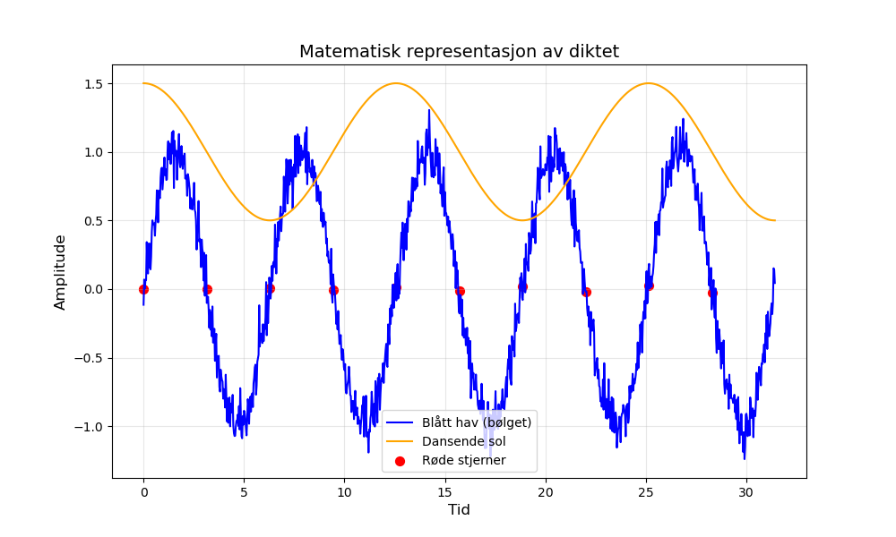

Dagens dikt
Blått hav og røde stjerner,
en sol som danser og aldri fjerner.
Vinden visker på sitt språk,
bølger i sinus, svevende svak.

Kode
import numpy as np
import matplotlib.pyplot as plt
# Matematisk representasjon av diktet:
# - "Blått hav": bølger, sinusfunksjon
# - "Røde stjerner": punkter langs bølgetoppen
# - "Sol som danser": oscillering over tid, cosine-mønster
# - "Vinden visker": svak støy (random perturbasjon)
# Generer data
x = np.linspace(0, 10 * np.pi, 1000) # x-verdier fra 0 til 10π
y_wave = np.sin(x) # bølger (havet)
y_sun = np.cos(x / 2) * 0.5 + 1 # solen som danser, mindre oscillering
stjerner = np.sin(x[::100]) # utvalgte røde stjerner langs bølgen
x_stjerner = x[::100] # posisjonene til de røde stjernene
# Kombiner vindens visking (støy)
y_wave += np.random.normal(0, 0.1, len(x)) # sinus med tilfeldig påvirkning
# Plot
plt.figure(figsize=(10, 6))
# Havet
plt.plot(x, y_wave, label="Blått hav (bølget)", color="blue")
# Solen
plt.plot(x, y_sun, label="Dansende sol", color="orange")
# Røde stjerner
plt.scatter(x_stjerner, stjerner, color="red", label="Røde stjerner", s=50)
# Stil og visning
plt.title("Matematisk representasjon av diktet", fontsize=14)
plt.xlabel("Tid", fontsize=12)
plt.ylabel("Amplitude", fontsize=12)
plt.legend()
plt.grid(alpha=0.3)
plt.savefig('2025-03-20-20-01-04.png')